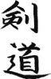

Tamam, bu bir tarih kitabı değil ve belki de çok uzattım ama, tarih okumayı ve yazmayı seviyorum. “Yetti kardeşim” diyenler sonraki bölümlere atlayabilir; ben de meraklısına Japonların “Âlemin kralı benim, başkasını tanımam” mertebesine nasıl yükselip sonunda atom bombasını yediğini kısaca özetleyeyim...
Meiji’den sonra İmparator Taisho dönemi başladı. Taisho, Meiji’ye göre daha silik ve pasif bir kişiydi. Taisho’nun aslında makul bir lider olduğu, ancak Meiji’nin gölgesinde kaldığı da söylenir. Taisho dönemi, İmparatorun pasifliğinden hem meclis ve demokratik partilerin hem de askeri ve aşırı milliyetçi kanadın yararlanmaya çalıştığı bir dönemdi. Bu dönemde ibre bir miktar daha meclis ve siyasi partilerin, yani demokrasinin lehine döndü.
Bunun sebeplerinden biri, Birinci Dünya Savaşında elde edilen zafer, Asya’da ele geçirilen topraklar ve savaştan taş atıp da kolu yorulmadan çıkan Japonya’nın Versailles’da “Milletler Ligi” kurulurken “beş büyük ülke”den biri olarak masaya oturarak siyasi arenada kendisini dünyaya kabul ettirmesiydi. Bu arada Birinci Dünya Savaşında iyice hırpalanan büyük devletler Asya cephelerinin ihtiyaçlarını Japonya’dan karşılamış, bu durum Japonya ekonomisinin daha çok güçlenmesini sağlamıştı.
Savaş sırasında Rusya’da Bolşevik hareketin yönetimi ele geçirmesi, komünizm rüzgârının Japonya’da da hissedilmesi, endüstrileşmiş toplumda işçi sınıfının hareketlenmesi ve şehirli proleter sınıfın oluşması derken 1920’li yıllara ağırlıklı olarak sosyopolitik gelişmeler damga vurdu. Tabii askeri cenah da boş durmuyordu; siyasi partilerin ve yeni fikirlerin, hele ki sosyalist fikirlerin güçlenmesi asker, polis, gizli polis ve uzantılarının hiç hoşuna gitmiyordu. Abdülhamit’in istibdat döneminden beter bir ülke içi istihbarat ya da espiyonaj sistemi kıpırdanan halkın üzerine balyoz gibi iniyordu.
Japonya kendini dünyaya bir süper güç olarak kabul ettirse, ekonomisi hızla gelişmeyi sürdürse de, çalkalanmaya devam eden dünyadaki gelişmelerden etkileniyordu. Sıkı bir ekonomik ittifak kurduğu ABD ile ilişkilerinde küçük çatlaklar oluşmaya başlamıştı. ABD de topraklarında savaş görmemiş ve Birinci Dünya Savaşından en büyük güç olarak çıkmıştı. Büyük İngiliz Krallığı da artık ABD’nin eline bakıyordu ve mali açıdan Amerika’ya gebe olmayan az sayıda ülke vardı. Bu ülkelerden biri de Japonya idi.
Pasifik’teki ABD ve Japonya çıkarları bir yere kadar örtüşüyor, bir yerden sonra ise Japonya’nın emperyal hevesi ABD’nin keyfini kaçırıyordu. İki ülke Pasifik’in en büyük donanmalarına sahiptiler. 1920’lerin sonlarındaki büyük ekonomik krizin gümbür gümbür yaklaşması iki ülke arasındaki “al gülüm ver gülüm” finansal ilişkileri de sarsıyordu.
Üstüne üstlük 1923’te Tokyo’da yaşanan, dünya tarihindeki en büyük depremlerden biri ülkeye çok ağır bir darbe vurmuştu. Ülke içindeki öğrenci, işçi, köylü, anarşist, sosyalist, komünist hareketleri yükselişe geçmiş, demokrasinin büyüme sancıları Japonya’yı sarmıştı. 1920’lerde demode olmaya başlayan militer akım ve derin devlet yeniden güçlenmeye ve ultra milliyetçi fikirler imparatorluk tahtını kuşatmaya başlamıştı.
Japonya’daki milliyetçi akıma körükle giden ABD, Pearl Harbour’ın bombalanmasına yol açan gelişmeleri de bu sırada tetikledi. ABD, Japonya ile İngiltere arasındaki askeri ittifaka gıcık kapmıştı. Her iki ülke de müttefiki olsa bile, birbirlerine bu kadar yaklaşmaları ABD’yi rahatsız ediyordu. Anglo-Japon ittifakının Japonya için sembolik bir önemi vardı. Japonya’nın gözünde İngilizler de asil bir kandan gelen, gururlu bir ada imparatorluğu idi ve dış dünyaya yeni açılan Japonlar için batı dünyasında prestijli bir dosttu.
ABD, İngiltere’ye baskı yaparak ittifak anlaşmalarının yenilenmesini önledi ve Japonya’yı dünya üzerinde “ittifaksız” bıraktı. Bu gelişme, Tokyo’da yeniden palazlanan militer cephenin ekmeğine yağ sürdü ve “Japonun Japondan başka dostu yoktur” tezi ağırlık kazandı.
1926 yılında Taisho vefat etti ve Japonya’nın en uzun süre iktidarda kalan imparatorlarından efsanevi Hirohito bu toz duman arasında tahta oturdu. Bir yıl sonra büyük bir ekonomik kriz önce Tokyo’yu, sonra tüm ülkeyi vurdu. Toplumsal çalkantılar zirve yaptı. Tüm bu olumsuz gelişmelerden en fazla nemalanan da aşırı milliyetçiler oldu. Milliyetçi cephe Japonya’nın geleneksel izolasyon politikasını, yabancı korkusunu işleyerek çözümün ancak denizaşırı büyük bir imparatorluk kurmaktan geçtiği fikrini işlemeye devam ettiler.
Hirohito neler olup bittiğini anlayana kadar iktidar mücadelesi veren gruplar arasındaki çekişmeler had safhaya ulaştı. Ordu içindeki şahinler bile daha naif, ılımlı olanlar ile gözünü kan bürümüşler olarak ikiye ayrılıyordu. Fikir ayrılıkları keskinleşmeye, taraflar kutuplaşmaya başladıkça sahalarda görmeyi arzulamadığımız dokuz kusurlu harekete sık sık rastlanır oldu ve siyasi iftira, infaz, suikast ve cinayetler havada uçuşmaya başladı. 1940’lara kadar öldürülen başbakan, bakan, general, bürokrat ve işadamlarının haddi hesabı tutulamaz oldu.
Bütün renkler hızla kirlenirken beyazın birinciliği alması gibi, toplumun tüm kesimleri radikalleşirken birinciliği yabancı düşmanı aşırı milliyetçiler aldı. İşin bir başka ilginç boyutu, imparatoru ve hükümeti etki altına almaya çalışırken kullandıkları en birinci söylem “komünizm tehlikesi” idi. Japonya ile Türkiye arasında gördüğüm benzerliklerden biri de, iki ülkede de hiçbir zaman ciddi bir tehdit teşkil etmemiş olan zavallı komünizmin her daim bir öcü olarak öne çıkarılması ve bu süreçte diğer “aşırı”ların parsayı toplaması idi.
Milliyetçilik rüzgârının etkisi altına girerek etrafa saldırmaya başlayan Japonya diğer ülkelerden tepki gördükçe ülke içindeki milliyetçi akım güçleniyordu. “İşte gördünüz mü, kendileri tüm dünyayı sömürmüşler, biz bir iki ülkeye sarkınca carladılar” söylemi Japonya’da giderek taraftar topluyordu. Bu söylemi sahiplenenler bir bakıma haksız da değillerdi ve bir süre sonra “Büyük Asya Ortak Refah Küresi” projesini geliştirdiler. Bu garip isimli projenin anlamı kısaca şuydu: “Ey Asyalı hemşerilerimiz, yıllarca batı sizi sömürdü, iliğinizi kuruttu; şimdi biz sizi işgal edip sömüreceğiz ve hep birlikte kalkınacağız.”
Japonya, Mançurya’yı işgal edince Milletler Cemiyeti protestoları artırdı ve sonunda Japonlar “Yettiniz gayrı” diyerek cemiyetten çekildi. Artık önlerinde cart curt edecek kimse kalmayınca Japonlar Çin’e de daha fazla sulanmaya başladılar. 1937’de Japon askerleri, Şanghay’da, “Niye bize çekik çekik bakıyorsunuz” diyerek Çinlilere sataştı ve bir hamlede şehri işgal ederek önce Nanking’e, sonra Pekin’e girdi.
Japonların Çin’deki vahşeti çok sayıda filme, kitaba, araştırmaya konu olmuştur. Bushido gibi sağlam bir etik kodu olan bir milletin nasıl bu kadar gözünün döndüğü Japonların bile cevabını bulamadığı bir soru olarak kalmıştır. Kitle psikolojisi anlaşılmaz bir olgu; on binlerce munis insan bir ordu bayrağı altında toplanıp üzerlerine üniforma geçirilince benliklerinden bu derece mi sıyrılabiliyor, bu derece mi vahşileşebiliyor?
Neyse, konu çok dallı budaklı zaten, daha da uzatmayalım. Japon ordusu Çinliler karşısında az zamanda büyük başarı kazanınca, Hirohito’nun çevresindeki askerler gaza gelmiş ve imparatoru da coşturmuşlar. Saray çevresinde (bizim de kulağımıza yabancı olmayan) bir söylenti kulaktan kulağa yayılmaya başlamış ve Çin’in üç ay içerisinde tamamen işgal edileceği iddia edilmiş. “Abicim, sabah kahvaltısını müteakip Çin’e girsek akşam yemeğini Pekin Aspava’da yeriz evelallah” benzeri dolduruşlara Japonlar da vaktiyle inanmış.
Bir süre sonra Japonya Çin’de işlerin o kadar da kolay olmadığını görmüş. Bu sırada dünyanın Japonya üzerindeki baskısı ve ambargosu da artmış. Dünyadan iyice yalıtıldığını hisseden Japonya, kendisine aynı yolun yolcusu iki kafadar daha bulmuş ve Almanya-İtalya-Japonya ittifakı 1940 yılında gerçekleşmiş. Bunun üzerine ABD ambargoyu iyice genişletmiş ve Japonya’nın petrol ihtiyacını karşılaması iyice zorlaşmış.
Bu arada ordu içinde denizciler-karacılar çekişmesi de sürüyormuş. Yahu, o kadar savaşın, çarpışmanın içinde birbirinizle didişecek enerjiyi nereden buluyorsunuz? Karacılar Çin’de biraz da tartışmalı bir zafer elde edince, denizciler de karacılarınkine benzer bir dolduruş kampanyası ile imparatorun huzuruna çıkmışlar: “İmparatorum, sabah kahvaltısından sonra havalanıp Pearl Harbor’u bombalarsak akşam yemeğini Waikiki Plajında yeriz evelallah.”
Ve gerisini az çok biliyorsunuz... Japonya, ABD donanmasına saldırır, eşzamanlı olarak Singapur, Endonezya, Filipinler, Burma gibi ülkeler işgal edilir ve şaşırtıcı bir şekilde Japon ordusu tüm cephelerde başarı kazanır. İşgal edilen yerlerde daimi kalınacakmışcasına büyük yatırımlara girişilir, Kwai Köprüsü projesinin başına William Holden getirilir.
Ancak ordu artık yıpranmaya, yorulmaya başlamıştır ve “Midway” Savaşı ile Pasifik’te esen rüzgârlar tam tersine döner. Japonya’nın yenilgisinin başlangıcı olan savaşın, okyanustaki konumu nedeniyle “yolun ortası” anlamına gelen Midway’de gerçekleşmesi çok manidardır... Aslında savaşa iyi başlayan ve ilk yarıyı önde kapayan Japonya, ikinci yarıdaki basit defans hatalarının sonucunda ağır bir yenilgi alır ve donanmasını kaybeder.
İnsanlık tarihindeki en büyük savaşın seyrinin anlık bir hatayla başlayan bir çorap söküğü şeklinde gelişmesi de tarihin cilvelerinden... (Hatta dünyanın diğer tarafında Normandiya Çıkarmasını da Almanlar çok basit hatacıklarından kaybediyor.) Ardından Japonların Pasifik’teki kontrolü tamamen ABD’ye kaptırması, adalardaki kanlı savaşlar, Japonya’nın sürekli bombalanması, Okinawa’daki büyük çarpışma, atom bombaları ve sonunda Japonya’nın teslim olması...
ABD, teslim olan Japonya’yı hemen kanatları altına alır. 1941’de Filipinler’de Japonlar karşısında etkisiz kalıp, “Dönüşüm muhteşem olacak” diyen Pasifik komutanı general MacArthur Japonya’yı işgal eden kuvvetlerin başına atanır. MacArthur’un görevi, savaş suçlularını yargılamak, Japonya’da barışçı bir demokrasiyi tekrar oturtmak ve devleti yeniden yapılandırmaktı. Hatta Japon ordusu ile omuz omuza vererek savaş ekonomisinden köşe olan zaibatsu şirketlerini parçalayıp ekonomiyi yeniden yapılandırmak da MacArthur’dan bekleniyordu.
Ama bu ulvi görevler için MacArthur’a ne kadar güvenilirdi ki? General, ABD başkanı olmaya kafayı takmış ve Japonya’da parlak bir gösteri yaparak 1948’deki seçimlerde cumhuriyetçilerin adayı olmayı planlamış bir hırs küpüydü. Japonya ile eski güçlü bağları canlandırmak isteyen eski ABD başkanı Hoover, büyükelçi Grew ve general Bonner, MacArthur’un bu zaafından oldukça faydalanacaktı. MacArthur, ABD’deki çok önemli finansal çevrelerin Japonya üzerinde ciddi niyetleri olduğunu hissedince onların desteğini de sağlayabilmek için sözlerinden fazla çıkmadı.
İlk ilginç gelişmeler savaş suçlularının yargılanmasında yaşandı. İmparator ve ailesi bir anda her türlü suçlamadan muaf kılındı. İmparatorluk ailesinden birçok zat-ı muhteremin özellikle Asya’da yaşanan katliamlardan sorumlu olduğu bilindiği halde, suçlar bir grup askerin üzerine yıkıldı ve oldukça az sayıda insan yargılanarak koca bir savaşın yükünü omuzladı.
Hadi prensleri ve savaş endüstrisini yaratan bir grup zaibatsu patronunu anladık; ama mahkemeden sıyrılan en ilginç gruplardan biri, özellikle Çin’de sivil halk üzerinde epey bir kimyasal/biyolojik silah denemesi yapan “Birim 731”in üst düzeyi idi. Sınırsız denek üzerinde hunharca deney yapan bu grup üyeleri tüm bildiklerini ABD’li bilim adamlarına aktarma karşılığında serbest bırakıldı ve ABD’ye transfer edildi.
İmparatorluk ailesinden savaş tazminatı olarak alınması planlanan servetin yine aile içinde kalması için uygun bir dümen hazırlanarak imparatorluk gayrımenkulünün büyük kısmı aileye yakın işadamlarına kağıt üstünde “satıldı”. Ailenin mal varlığı açıklandığında ağlanacak vaziyetteydiler.
İlginç bir örnek olarak “Prince” otelleri vakası incelenebilir. Japonya’nın birçok yöresinde olağanüstü güzel köşeleri kapmış olan “Prince” oteller zinciri Japonya’nın güçlü ve bir o kadar da şaibeli ailesi Tsutsumi’lere aitti. Zincirin isminin “Prince” olması manidardı; çünkü otellerin üzerinde kurulduğu geniş araziler prens Asaka tarafından Tsutsumi’lere apar topar “satılmış” ve kamulaştırılmaktan ya da savaş tazminatı olarak el konulmaktan kurtarılmıştı.
Bu ve benzeri birçok ticari akitler MacArthur tarafından görmezden gelindi ve derin Japonya ile derin ABD arasındaki bağlar iyice sağlamlaştırıldı. Bütün bu olan bitenler ABD’deki demokratlar ve Japonya’nın gerçek anlamda demokratikleştirilmesini isteyenler tarafından eleştiriliyor, Japonya’daki durumun göstermelik önlemlerle geçiştirildiği iddia ediliyordu. Ama Japonya’daki örtbas operasyonu ABD’de tekrarlandı ve ülkede olup bitenler “oldu bitti”ye getirildi.
Bu sıralarda Kore krizi de patlayınca Japonya’daki reformlar kimsenin umurunda olmadı. ABD’nin önceliği, Pasifik’teki komünist tehlikeyi önleyecek güçlü ve söz dinleyecek bir yandaştı. Grew ve ekibi, MacArthur’a başkanlık için gerekli desteği çıkmadı; zaten MacArthur’dan çok da fazla haz etmiyorlardı. Japonya’daki Amerikan yönetimi, Japonlar için apar topar, etliye sütlüye karışmayan bir anayasa hazırladı ve 1952’de Japonya’nın tekrar egemenliğine kavuşacağı süreç başladı.
Bu sırada Kore cephesinin komutanlığı da “Sen hazır oralardasın” denerek MacArthur’a verildi. Kendisini Japonya’nın lideri olarak gören ve devlet başkanlığı havasına iyice girmiş olan MacArthur, Truman’ın savaş politikalarını eleştirip Kore’ye de atom bombası falan atmaktan söz edince çizmeyi aştı. Sonuçta MacArthur ABD’nin bir askeri idi ve ülke politikaları hakkında ileri geri konuşamazdı. Bu yüzden Kore cephesi komutanlığından alındı, ABD’ye bir şekilde savaş kahramanı olarak döndü, aldığı madalyaların ve egosunun ittirmesiyle 1952 seçimlerinde başkan adayı olmak istedi, ama rakipleri tarafından yıpratılarak evine gönderildi.
O tarihten sonra ABD’nin her operasyonu esnasında “emekli general” kontenjanından TV programlarına çıkıp fikir belirtti mi, bilmiyorum... Ama ABD’nin ilerleyen yıllarda Güney Amerika ülkeleri başta olmak üzere çeşitli ülkelerde yaptığı karanlık operasyonların kaynağı hakkında bildiklerini açıklasaydı büyük sükse yapabilirdi.
Japonya, İkinci Dünya Savaşı sırasında Asya ülkelerinde büyük bir yağma operasyonu gerçekleştirdi. Tapınaklardaki altın heykellerden yeni gelinlerin kollarındaki beşibiryerdelere kadar bulduğu tüm altını gizli bir operasyonla cebellezi etti. Ganimetin toplanması ve saklanması bizzat imparatorluk ailesinin üyeleri tarafından organize ediliyordu. Toplanan altınlar Filipinler’deki çok gizli sığınaklarda saklanıyordu. Bu sığınakların yerini ele vermesinler diye inşaatta çalışan savaş esirleri oracıkta öldürülüyordu.
Ganimetin Filipinler’de saklanmasının nedeni, Japonya’ya taşınmasının çok riskli olmasıydı; Japon Denizinde konuşlanan ABD denizaltıları, Asya’dan Japonya’ya giden tüm gemileri torpilliyordu. Ayrıca Japonya, zafer sarhoşluğu içinde, Filipinler’i nasılsa hiçbir zaman kaybetmeyeceğini düşünüyordu. Düşmana galebe çaldıktan sonra nasıl olsa bir gün altınları Japonya’ya taşırlardı. Ama evdeki hesap çarşıya uymadı ve savaş kaybedildi; altınlar da Filipinler’deki onlarca gizli sığınakta kalakaldı.
Japonlar altınları kurtarmaya çalışırken, operasyonda Japon prensinin yanında çalışmış olan bir gammaz hazineyi ABD’lilere fısıldayıverdi. ABD ne yaptı? Hemen altınları çıkarıp savaş tazminatı olarak Asya ülkelerine iade etti, değil mi? Değil. Japonlara “şşşşttt” deyip bulabildiği kadarını çıkardı ve Japonya ile paylaştı. Ganimet olabildiğince gizli ve “kirli” idi; bu yüzden ABD kendi payını, iddialara göre, Soğuk Savaş yıllarındaki CIA operasyonlarının finansmanında kullandı. Allende, kendisine karşı kışkırtılan Pinochet ve yandaşlarının Siyam’daki Budist tapınaklarının altınlarından beslendiğini duysa herhalde çok şaşırırdı. Japonya ise kendi payına düşen serveti Kore Savaşından sonraki büyük kalkınma hamlesi sırasında yavaş yavaş, yedire yedire ekonomiye geri kattı ve akladı. Gerek Asya’dan kaldırılan ganimet gerekse de işgal kuvvetlerinden gizlenen ABD-Japonya finansal ilişkileri Japon kalkınma hamlesinin tuzu biberi oldular.
Altınların hikâyesini duyan çok sayıda Japonun Filipinler’ in dağlarında yürüyüşe çıktığını okumuştum. Gariptir ki halen bir miktar altının kaldığı söylenen bölge Filipinler’de gerillalar arası çatışmaların en yoğun olduğu yerlerde. Güvenliklerinden ödün vermeyen ve buluttan nem kapan Japonların en fazla Kuzey Irak kadar güvenli bir bölgede doğa yürüyüşüne gitmesi ve sırt çantalarında dedektör taşıması ilginç bir detay.
Tabii altınlarla ilgili söylentiler Filipin halkı arasında da yayılmıştı. Söz konusu sığınaklardan birini Filipinler’in efsanevi diktatörü Ferdinand Marcos’un bulduğu ve parayı cebine indirdiği de rivayetler arasındadır. Dünyanın en büyük ayakkabı koleksiyonunun sahibi İmelda Marcos’un binlerce çift ayakkabıyı hangi parayla aldığını sanıyorsunuz?